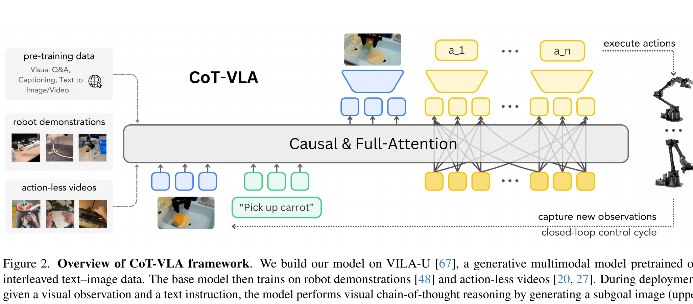

CoT-VLA: Visual Chain-of-Thought Reasoning for Vision-Language-Action Models
Zhao 等 · CVPR 2025 · arXiv:2503.22020 · Zotero FSIP3P2M
CoT-VLA 不让策略从当前图像直接跳到动作，而是先生成一张数步之后的视觉子目标，再以“当前观测 + 语言 + 想象子目标”为条件生成 action chunk；这张未来图就是可观看的 visual chain-of-thought。
§1 Introduction：动作之前为什么要先生成一个视觉子目标
多数 VLA 从当前观察直接映射到动作，推理过程藏在隐状态里。面对长程或组合任务时，模型既难显式表达“下一阶段应该达到什么状态”，也难利用没有动作标签的大量演示视频。文本 CoT 可以写计划，却很难精确表达物体位姿、接触点和机器人—场景几何。
CoT-VLA 把未来图像当作 visual chain of thought：模型先自回归生成一个任务相关的未来子目标，再让动作 chunk 条件于当前观察和这个视觉子目标。生成未来图像只需要视频，因此 actionless video 可以训练 reasoning；生成动作仍使用机器人示范。部署时每执行一小段动作就重新观察、再生成下一视觉目标，形成闭环。
展开原文 · 核心主张
“predicting future image frames ... as visual goals before generating a short action sequence”
§2 Related Work：文本 CoT、视觉子目标与 actionless video
机器人规划已有文本步骤、2D 框、点轨迹和目标图像等中间表示。文本便于语义分解却缺几何精度；框和点更紧凑但丢失场景上下文；目标图像能同时表达物体状态、空间关系和任务进度，并天然兼容无动作视频。CoT-VLA 将这种视觉中间步骤放进 VLA 的自回归序列。
与 UniPi 的完整视频计划不同，它只生成较短的视觉子目标并直接预测 action chunk；与 GR-1/WorldVLA 的联合辅助预测相比，未来图像在推理时成为动作的显式条件。混合注意力也区分两种生成规律：视觉 reasoning 保持 causal attention，动作 chunk 使用 full attention，使各动作维度和时间步可协同生成。
§3 Visual CoT 的概率分解
- $\hat s_{t+n}$
- 不是文字解释，而是离散视觉 token 解码出的未来子目标图像。
- $\hat a_{t:t+m}$
- 条件于模型自己想象的未来，因此子目标既能指导动作，也可能传播幻觉。
- 闭环
- 执行 action chunk 后重新拍摄现实观测，再生成下一张子目标，而非一次生成整段长视频。
§4 同一模型先“看见目标”，再行动

1. 看当前状态并理解任务
语言规定意图，当前图像提供真实约束。
输入是什么：相机图像或视频，加上任务指令和机器人当前状态。它们还是原始观测，模型尚未把它们变成可用于预测或控制的特征。
这一步究竟做什么：本步骤执行“看当前状态并理解任务”。具体来说，语言规定意图，当前图像提供真实约束。 这里处理的只是整条链路中的一个接口：把上一步的结果整理成下一步能够正确读取和继续计算的形式。
输出到哪里：经过本步骤处理、含义更明确的中间结果。这个结果会交给下一步“生成未来视觉子目标”继续处理。
为什么不能省略：它把未经处理的原始问题变成后续模块可以计算的输入，是整条链路的起点。
2. 生成未来视觉子目标
把长任务压成下一阶段应达到的可观察状态。
输入是什么：来自上一步“看当前状态并理解任务”的产物：经过本步骤处理、含义更明确的中间结果。本步骤还会按论文设置读取当前条件、时间步或训练信号。
这一步究竟做什么：本步骤执行“生成未来视觉子目标”。具体来说，把长任务压成下一阶段应达到的可观察状态。 模型从相同起点产生候选未来，后续模块再检查这些未来是否符合条件、物理规律或动作需要。
输出到哪里：一套固定且可复现的输入条件，后续所有模型都必须在这套条件下生成或行动。这个结果会交给下一步“条件化 action chunk”继续处理。
为什么不能省略：它承担上下两步之间的接口；缺少它，前一步产生的信息无法以正确格式或正确含义传到下一步。
3. 条件化 action chunk
动作既要符合当前几何，也要朝子目标推进。
输入是什么：来自上一步“生成未来视觉子目标”的产物：一套固定且可复现的输入条件，后续所有模型都必须在这套条件下生成或行动。本步骤还会按论文设置读取当前条件、时间步或训练信号。
这一步究竟做什么：本步骤执行“条件化 action chunk”。具体来说，动作既要符合当前几何，也要朝子目标推进。 这个动作会真正改变环境，所以系统还要读取执行后的新观测，检查模型预期与现实之间的差距。
输出到哪里：一套固定且可复现的输入条件，后续所有模型都必须在这套条件下生成或行动。这个结果会交给下一步“执行后重规划”继续处理。
为什么不能省略：它承担上下两步之间的接口；缺少它，前一步产生的信息无法以正确格式或正确含义传到下一步。
4. 执行后重规划
现实观测纠正想象偏差，形成短视界闭环。
输入是什么：来自上一步“条件化 action chunk”的产物：一套固定且可复现的输入条件，后续所有模型都必须在这套条件下生成或行动。本步骤还会按论文设置读取当前条件、时间步或训练信号。
这一步究竟做什么：本步骤执行“执行后重规划”。具体来说，现实观测纠正想象偏差，形成短视界闭环。 这个动作会真正改变环境，所以系统还要读取执行后的新观测，检查模型预期与现实之间的差距。
输出到哪里：可发送给机器人控制器的动作，以及执行后重新观测到的真实状态。这是图中这条链路的最终产物，随后会进入真实执行、模型更新或指标评测。
为什么不能省略：机器人动作会改变下一次观测；只有执行后重新读取现实，才能发现预测误差并阻止错误连续累积。
§5 为什么 actionless video 也能训练它
§6 混合注意力与两类损失
- Visual/Text
- 采用 causal attention，自回归生成未来视觉 code。
- Action chunk
- 采用 full attention，让一段动作内部共同协调，避免逐 token 串行放大误差。
- 总损失
- 只有机器人样本提供 $\mathcal L_{action}$；无动作视频主要扩充 $\mathcal L_{visual}$。
§7 可解释性换来了什么成本
§8 实验归因与复现：视觉 CoT 是因果帮助还是额外计算
最小可信复现清单
- 说明未来子目标相对当前帧的时间距离与训练采样分布。
- 对机器人示范和 actionless video 的 batch 比例、loss 权重分别记录。
- 检查生成子目标是否复制训练帧、泄漏任务终点或忽略机器人可达性。
- 用 counterfactual subgoal 测动作对视觉 CoT 的敏感性。
- 报告视觉 token 生成时间、动作 chunk 时间和闭环端到端频率。
CoT-VLA 把“想清楚再行动”具体化为可监督的未来图像；优势是能吃 actionless video，风险是视觉幻觉会直接成为动作条件。